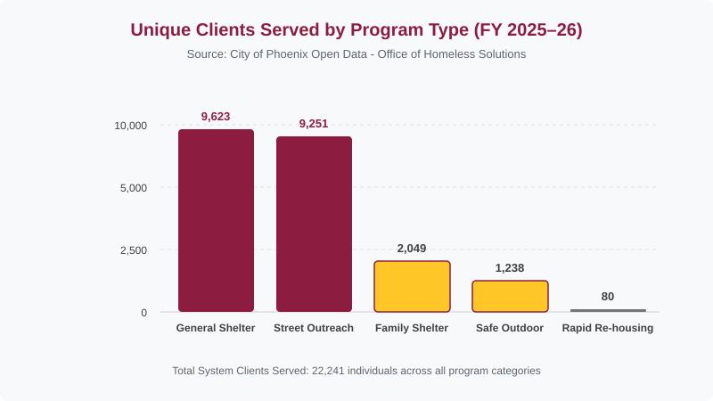
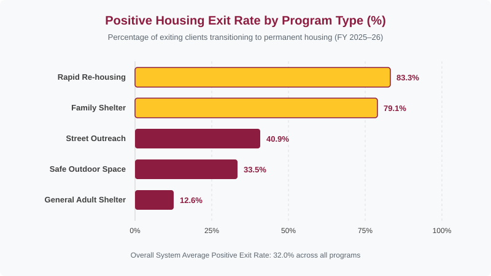

D1 · Story Frame
The City of Phoenix Office of Homeless Solutions (OHS) manages regional intervention strategies designed to prevent and end homelessness. Their comprehensive response framework encompasses emergency shelter operations, safe outdoor spaces, street outreach, heat-relief centers, and long-term supportive housing. Evaluating these initiatives requires analyzing client transition rates across distinct service models to identify which intervention types yield sustainable, long-term housing stability.
Core Claim: While general emergency adult shelter serves the highest number of clients, the data suggests that specialized models of service, such as family emergency shelters and rapid re-housing, yield higher rates of successful outcomes for clients.
All metrics are derived from the official City of Phoenix's Open Data
Portal dataset titled "Homeless Solutions Client Outcomes by Program
Type" (last updated: October 2026). Positive exit rates represent the
percentage of total program exits resulting in permanent housing
outcomes. (EXIT_POSITIVE / EXIT_TOTAL)
The selected dataset spans fiscal years 2023-24 through 2026-27 Q1 across five core program types:
- Emergency Shelter (Adult)
- Emergency Shelter (Family)
- Safe Outdoor Space
- Rapid Re-Housing
- Street Outreach
D2 · Editorial Figures


D3 · Accessible Data Table
| Program Type | Unique Clients | Avg. Length of Stay | Positive Exits | Positive Exit Rate |
|---|---|---|---|---|
| Emergency Shelter (Adult) | 9,623 | 100 days | 985 | 12.6% |
| Emergency Shelter (Family) | 2,049 | 68 days | 1,223 | 79.1% |
| Safe Outdoor Space | 1,238 | 90 days | 330 | 33.5% |
| Rapid Re-Housing | 80 | 187 days | 30 | 83.3% |
| Street Outreach | 9,251 | N/A | 3,461 | 40.9% |
| System Total | 22,241 | 86 days | 6,029 | 32.0% |
Data Source: City of Phoenix Open Data Portal, (FY
2025-26). Positive Exit Rate = EXIT_POSITIVE /
EXIT_TOTAL * 100. *Street Outreach programs do not track
fixed residential length of stay.
D4 · Responsive SVG
D5-D6 · System and Documentation
Design System Token Summary
Extends CSS custom properties including color palette, spacing, and typography for consistent styling and legibility across the data story.
Linked Source & Asset Credits
-
Primary Dataset: City of Phoenix Open Data Portal
—
Homeless Solutions Client Outcomes by Program Type
(Dataset ID:
33d86336-207c-44b6-878e-331f256f4785). - Publishing Agency: City of Phoenix Office of Homeless Solutions (OHS).
- License & Usage Rights: Open Data Public Access License / City of Phoenix Open Data Portal Terms of Use. Free public use for municipal research and education.
-
Asset Credits: HTML markup, CSS custom
properties, and SVG graphics were independently created and
implemented with provided design tokens (Maroon
#8c1d40and Gold#ffc627).
Data Transformation
Raw data records from
2026.09.30_ohs_programsummary.csv were processed using
Python (pandas) for the following transformations:
- Filtered for fiscal years 2023-24 through 2025-26.
- Grouped data across the 5 primary program models: Emergency Shelter (General Adult), Emergency Shelter (Family), Safe Outdoor Space, Rapid Re-housing, and Street Outreach.
-
Summed unique client counts
(
COUNT_CLIENTS_UNIQUE_ID), positive exits (EXIT_POSITIVE), and total exits (EXIT_TOTAL). -
Calculated the weighted positive exit percentage for each category
using
(EXIT_POSITIVE / EXIT_TOTAL) * 100.
System Test Records
- W3C Validation: All HTML elements conform to W3C standards.
- 320px Mobile Viewport: Operational page reflow, SVG scaling, and horizontal scrolling within tables.
- 768px Tablet Viewport: Operational page reflow, SVG scaling, and horizontal scrolling within tables.
- Keyboard Navigation: All interactive elements are accessible via keyboard tabbing.
- Browser Zoom: Content remains accessible and readable at 200% zoom level.
- Accessibility Tree: The page structure is optimized for screen reader navigation.
AI Disclosure Statement
Assistive AI tools were utilized for analyzing and calculating aggregated program metrics with Python. Data values were independently reviewed and validated against the original dataset. Accessibility tests verified locally in Google Chrome using Developer Tools.